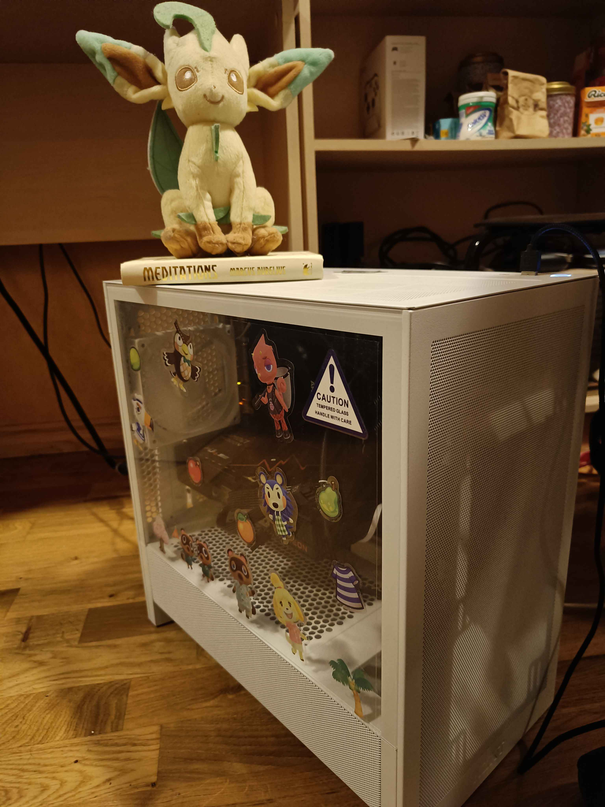
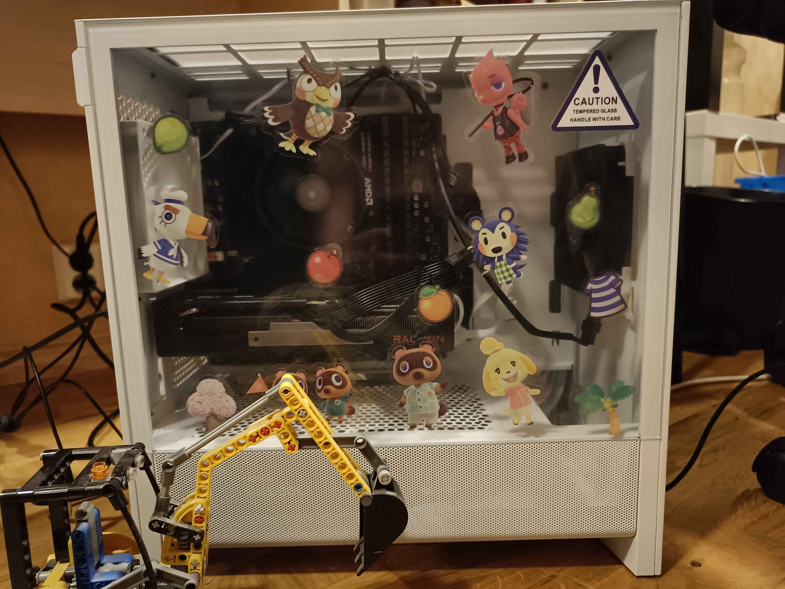
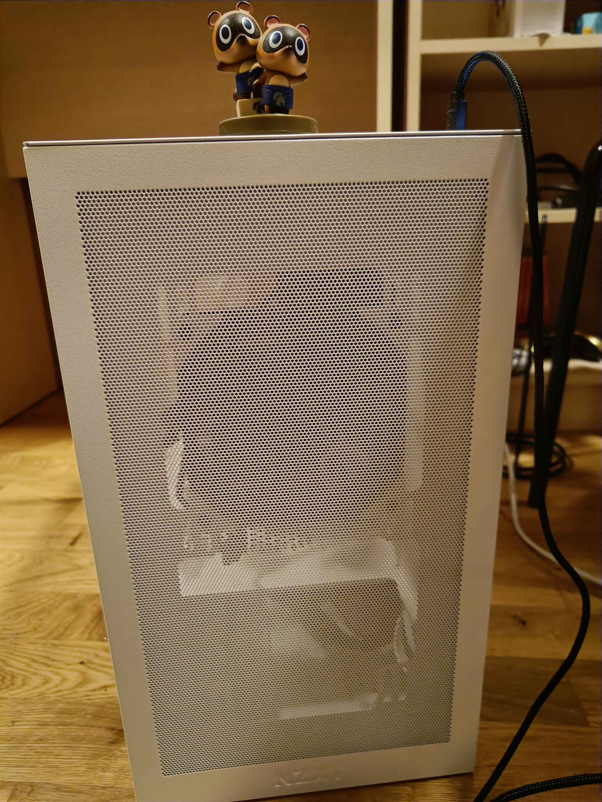

Over my life, I have found 2 main things that motivate me to work; money and passion. It turns out I'm pretty passionate about both the old internet and Animal Crossing. So a retro-style personal website about my favorite game is my favorite project to work on.
My big time passion project is a website centered around my island from Animal Crossing, hosted on https://snowcape.neocities.org/ and backed up in this repo. Neocities is a revival of the old Geocities, where people used to host personal websites back in the day.
The site is all done in regular HTML/CSS/JavaScript, in order to match the retro vibe of Neocities. A personal website should reflect the person behind it, and my creative process is a bit messy and chaotic. Therefore, the aesthetics of the site, especially the index page, are intentionally maximalist.(or as some would say, a bit messy)
The site consists of several different sections;
Before my site was Welcome to Snowcape, it was the Snowcape interactive map. For the map itself, I tried placing a couple pins manually before deciding I needed to make a tool to place them. The mapping tool consists of a JavaScript frontend and a Python backend, communicating through websockets. The JS side lets the user cycle through a folder of images, assign coordinates to them, and send the id of the image alongside the coordinates to the python backend. The backend stores this info, and later uses it to generate the necessary HTML to place the pins and connect them to the relevant screenshot. It also copies every pinned screenshot into a seperate folder for use with the website to avoid storing unused images and wasting storage.
For the fashion section, I borrowed the idea of reusable components from modern frameworks, and wrote some Javascript to generate recurring HTML elements. The slideshows, slideshow controls, left/right placement of items and that little gradient on top of the text box were all generated for each showcase. The showcase containers themselves and textboxes were not generated, as the text content and coloring is distinct for each one. This was my first time coding reusable components, after all. I could probably automate it more if I rewrote it today.
A fun part of surfing the retro web is leaving little messages in people's guestbooks. There are several guestbook solutions available for free online, but none of them were customizable enough for me. So I made my own frontend. The actual recieving and storing of messages is done using HTML comment box, but my code hides most of the default comment section, and extracts the comments themselves in order to generate a new display.
The input areas of the comment section are also moved and resized in order to fit on a letter, to complete the aesthetic.
The guestbook is probably my favorite bit of code I've done for the site, because the process of taking an existing bit of HTML that I cannot access or change, analyzing its components, and reshaping it as if it was modeling clay, was a really fun puzzle to figure out.
I do reuse the same profile box for every character, and play around with the .animate() function from JavaScript, so there is a bit of clever coding on this page. Most of it, however, is centered around writing rather than coding, so it's not the most interesting from a programming perspective.
The Cyber-Brochure™ is a collection of several neat little functions, like the before-and-after slider for the museum, a moveable ripoff of Clippy, an animation when warping to specific sections(with some random color variation) and some fun CSS tricks to recreate the visual of turning a page.
The layout is rather convoluted as well, and it is how I discovered the discrepancy between Windows and Linux font rendering. This led to me creating the font size changer widget, which is consistent across the entire site, and is also generated entirely by a script, meaning all I need to add to each page is a <script> tag for the whole thing to function.
Remember Myspace? Well a lot of peolpe are nostalgic for it, and someone made SpaceHey, which is essentially a project to bring back old myspace.
One of the main selling points is the ability to massively customize your profile using HTML and CSS. Which sounded fun to me. So I made a profile,
and I've been messing around a lot with the customization. Check it out(warning: highly silly): Super Duper Cool and Handsome Gamer
PS: hover your mouse over the P switch to make the Mario bros do a cool animation:)



I always kinda wanted to build a pc to see what it was like and also to play cool new video games at high graphics settings. High-ish at least. My 10 year old 1080p monitor still works good so I'm sticking with it.
I also have experience with Linux now because Microsoft wanted me to pay to use their OS while also ending support for Windows 10. So if I'm using a new OS anyway that's the perfect chance to see what Linux is like.(Mainly I liked it being free haha)
I was a bit uncomfortable with writing that I'm a quick learner on my cv and applications, so I decided to prove to myself that do in fact learn quick by quickly learning to mod the game Balatro
My mod can be found at https://github.com/Icyhuman/balatro-greenmod
I pretty much spent a few hours figuring out how to create stuff in Lua, then a few days actually designing stuff. It's a quick little project, so don't expect anything super impressive.
A lot of employers these days put a lot of emphasis on using AI tools for coding. So I figured I needed at least a little experience with that stuff.
So I put together a combination of a desktop pet and one of those finger skateboards, but with all the code being generated by ChatGPT.
Gotta be honest though, giving the AI full control of the code isn't fun. It may be efficient, but it's in no way creatively fulfilling. And for a little personal project with no financial incentive, I need some creative fulfillment to motivate me. I got a solid idea of the key principles of AI-driven development, but for my unpaid hobby projects, I think I'll stick to writing the code myself and using AI as more of an oracle/advisor.
Anyway, complaints aside, the project can be found in this repo.